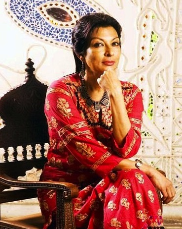

Closing Panel
|  |
Celebrated around the globe, Dr. Sarabhai was the recipient of the Chevalier des Palmes Academiques award by the French government in 1999, the Woman of the Year award by the Indian Merchants’ Chamber in 2003, the Crystal Award by the World Economic Forum in 2008, 2 Film Critics Awards for Best Actress in 1974 and 1984, and numerous other international honours. In 2005, she was nominated for the Nobel Peace Prize.
Dr. Sarabhai has led discussions around the world, emphasizing the importance of the arts in raising awareness about political and social issues. In June of 2009, she spoke at the United Nations’ first ever summit on global ethics in Geneva, and is a member of the World Economic Forum’s Council on the Future of India. She is also participating in the organization’s annual meeting at Davos in January 2011.
Joining us from India, Dr. Sarabhai has a powerful message to convey at the WAC closing ceremony. How can we better the welfare of our citizens and raise awareness under such a dynamic and conflicting political agenda? Where do the arts have place in our society? At the conclusion of WAC 2011, these pivotal issues will be addressed by the danseuse, activist, and surely the challenger of the status quo that is Mallika Sarabhai.
—Omar Abboud